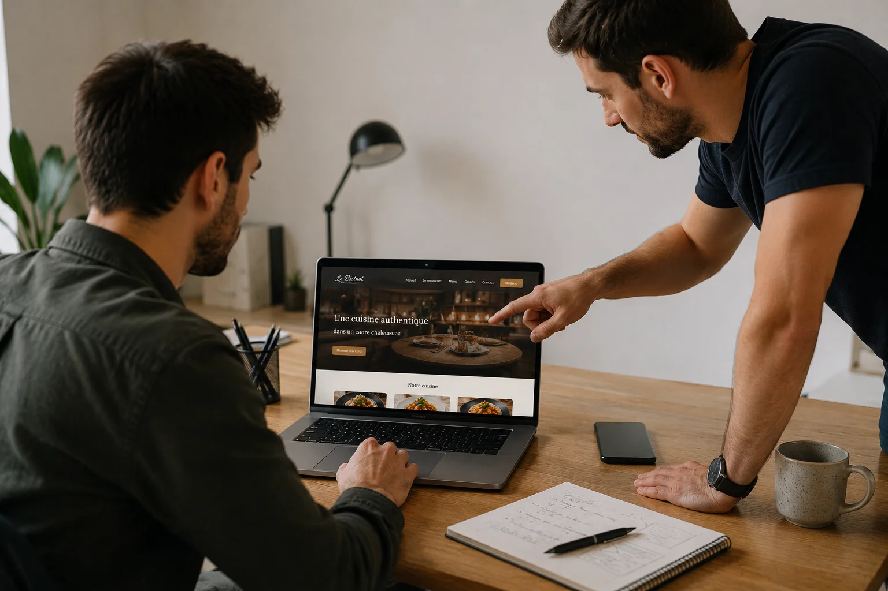

Central Web Agency est basée à Heyrieux, dans l’Isère, près de Lyon. Notre objectif est de créer un site utile à votre activité : présenter vos services, rassurer vos visiteurs et faciliter les contacts.
Une expertise technique solide
Notre équipe est formée au développement web depuis des années. Pas des autodidactes du week-end, pas des revendeurs de templates WordPress. Nous maîtrisons le code de A à Z : HTML, CSS, JavaScript, et les bonnes pratiques qui font la différence entre un site qui performe et un site qui stagne.
Chaque site que nous créons est développé sur mesure, ligne par ligne, en fonction de vos besoins, de votre secteur et de votre clientèle cible. Pas de solution générique, pas de copier-coller.
Une conception attentive aux ressources
Nous choisissons une architecture adaptée au projet. Une vitrine de présentation peut être statique ; un site administrable ou une plateforme peut nécessiter une base de données et des fonctionnalités dynamiques. Dans les deux cas, le poids des ressources et leur chargement méritent d’être mesurés.
- Une architecture adaptée : limiter les traitements inutiles et dimensionner les ressources selon les fonctionnalités prévues.
- Des ressources maîtrisées : optimiser les images, les polices et les scripts, puis contrôler leur effet sur le chargement.
- Une démarche de sobriété : éviter les ressources superflues ; un bénéfice environnemental chiffré demanderait une méthode de mesure dédiée.
- Une sécurité adaptée au projet : identifier les composants, les accès et les besoins de suivi technique selon la solution retenue.
La sobriété se travaille par des choix concrets de conception et de livraison des ressources. Elle ne permet pas d’annoncer une économie d’énergie ou de carbone sans mesure adaptée.
Des performances vérifiables, pas des promesses
Une performance se vérifie sur une page donnée, avec une date, un appareil et des conditions de test précises.
Lighthouse et PageSpeed Insights aident à identifier les ressources bloquantes et les optimisations possibles. Les scores peuvent varier selon les conditions ; ils doivent être accompagnés du contexte de mesure.
La performance contribue à l’expérience de navigation, au même titre que la lisibilité et l’accès aux informations. Elle ne suffit pas à déterminer le classement d’une page sur une recherche commerciale.
Un site utilisable rapidement facilite le parcours vers vos prestations et votre formulaire. Son effet sur les demandes reçues doit être observé avec les données disponibles, sans promettre un taux de conversion.
Un site beau mais lent, c'est une belle vitrine avec la porte coincée. Personne n'entre.
Notre approche : locale, humaine, sans intermédiaire
Nous sommes basés à Heyrieux, dans l'Isère, à 25 km de Lyon. Nous travaillons principalement avec des professionnels de Lyon et de la région Auvergne-Rhône-Alpes, même si nous accompagnons aussi des clients partout en France.
Chez Central Web Agency, vous ne parlez pas à un commercial qui transmet votre brief à une équipe que vous ne verrez jamais. Vous travaillez directement avec les personnes qui créent votre site. C'est plus simple, plus rapide, et ça donne de meilleurs résultats.
Nos tarifs sont clairs et sans surprise, à partir de 450€ TTC pour un site clé en main. Pas de frais cachés, pas de devis qui double en cours de projet. Ce que vous validez est ce que vous payez.
Ce qui nous importe vraiment
Nous ne faisons pas des sites pour faire des sites. Nous créons des outils qui doivent vous rapporter des clients, renforcer votre crédibilité et travailler pour vous 24h/24. Chaque décision technique et graphique que nous prenons est guidée par une question simple : est-ce que ça aide votre client potentiel à vous faire confiance et à vous contacter ?
Si vous cherchez une agence qui livre vite, code proprement, explique clairement ce qu'elle fait et répond à vos messages le jour même, vous êtes au bon endroit.